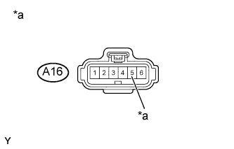
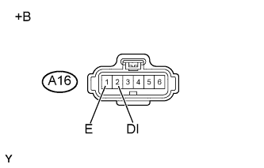
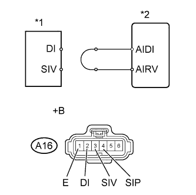

DTC P1613 Неисправность вспомогательного устройства управления подачей воздуха в нейтрализатор |
| № DTC | Условие обнаружения DTC | Неисправный участок |
| P1613 | Регистрируется состояние (1) или (2): (1) В течение не менее 3 с выполняются все перечисленные условия (логика диагностирования за 1 поездку):
|
|
|
| |
|
|
| 1.ПРОВЕРЬТЕ УСТРОЙСТВО УПРАВЛЕНИЯ ПОДАЧЕЙ ВОЗДУХА В НЕЙТРАЛИЗАТОР (ПИТАНИЕ) |
|  |
Отсоедините разъем устройства управления подачей воздуха в нейтрализатор.
Измерьте напряжение в соответствии со значениями, приведенными в таблице.
| Контакты для подключения диагностического прибора | Положение переключателя | Заданные условия |
| A16-5 (+B) - масса | Зажигание включено (IG) | 11–14 В (близко к напряжению аккумуляторной батареи) |
| *a | Вид спереди разъема со стороны жгута проводов: (к устройству управления подачей воздуха в нейтрализатор) |
Подсоедините разъем устройства управления подачей воздуха в нейтрализатор.
|
| ||||
| OK | |
| 2.ПРОВЕРЬТЕ ЖГУТ ПРОВОДОВ И РАЗЪЕМ (УСТРОЙСТВО УПРАВЛЕНИЯ ПОДАЧЕЙ ВОЗДУХА В НЕЙТРАЛИЗАТОР - ЕСМ) |
Отсоедините разъем устройства управления подачей воздуха в нейтрализатор.
Отсоедините разъем ЭБУ.
Измерьте сопротивление в соответствии со значениями, приведенными в таблице ниже.
| Контакты для подключения диагностического прибора | Условие | Заданные условия |
| C35-23 (AIRP) - A16-4 (SIP) | Всегда | Менее 1 Ом |
| C34-26 (AIRV) - A16-3 (SIV) | Всегда | Менее 1 Ом |
| C35-30 (AIDI) - A16-2 (DI) | Всегда | Менее 1 Ом |
| A16-1 (E) - масса | Всегда | Менее 1 Ом |
| Контакты для подключения диагностического прибора | Условие | Заданные условия |
| C35-23 (AIRP) или A16-4 (SIP) - масса | Всегда | 10 кОм или более |
| C34-26 (AIRV) или A16-3 (SIV) - масса | Всегда | 10 кОм или более |
| C35-30 (AIDI) или A16-2 (DI) - масса | Всегда | 10 кОм или более |
Подсоедините разъем устройства управления подачей воздуха в нейтрализатор.
Подсоедините разъем ECM.
|
| ||||
| OK | |
| 3.ПРОВЕРЬТЕ УСТРОЙСТВО УПРАВЛЕНИЯ ПОДАЧЕЙ ВОЗДУХА В НЕЙТРАЛИЗАТОР (НАПРЯЖЕНИЕ НА КОНТАКТЕ DI) |
|  |
Отсоедините разъем устройства управления подачей воздуха в нейтрализатор.
Измерьте напряжение в соответствии со значениями, приведенными в таблице.
| Контакты для подключения диагностического прибора | Положение переключателя | Заданные условия |
| A16-2 (DI) - A16-1 (E) | Зажигание включено (IG) | 11–14 В (близко к напряжению аккумуляторной батареи) |
| *a | Вид спереди разъема со стороны жгута проводов: (к устройству управления подачей воздуха в нейтрализатор) |
Подсоедините разъем устройства управления подачей воздуха в нейтрализатор.
|
| ||||
| OK | |
| 4.ВЫПОЛНИТЕ ДИАГНОСТИКУ В РЕЖИМЕ ACTIVE TEST С ПОМОЩЬЮ ПОРТАТИВНОГО ДИАГНОСТИЧЕСКОГО ПРИБОРА |
Отсоедините разъем устройства управления подачей воздуха в нейтрализатор.
|  |
Соедините контакты DI и SIV разъема жгута проводов для устройства управления подачей воздуха в нейтрализатор.
| *1 | Система управления подачей воздуха |
| *2 | ECM |
| *a | Вид спереди разъема со стороны жгута проводов: (к устройству управления подачей воздуха в нейтрализатор) |
Подсоедините портативный диагностический прибор к DLC3.
Включите зажигание (IG) и портативный диагностический прибор.
Войдите в следующие меню: Powertrain / Engine and ECT / Utility / Air Injection Check / Manual Mode / AIR PUMP: ON (ВКЛ), ASV: OPEN.
Запустите двигатель.
Выполняйте вмешательство в работу системы AIR, когда двигатель работает на холостом ходу.
Измерьте напряжение между контактами SIV и E разъема ECM, когда система AIR включена и выключена.
Выключите зажигание.
| Контакты для подключения диагностического прибора | Условие | Заданные условия |
| A16-3 (SIV) - A16-1 (E) | AIR PUMP: ON (ВКЛ), ASV: ОТКРЫТО | 0,5 - 2 В |
| A16-3 (SIV) - A16-1 (E) | AIR PUMP: OFF (ВЫКЛ), ASV: ЗАКРЫТО | 11-14 В |
 |
Соедините контакты DI и SIP разъема жгута проводов для устройства управления подачей воздуха в нейтрализатор.
| *1 | Система управления подачей воздуха |
| *2 | ECM |
| *a | Вид спереди разъема со стороны жгута проводов: (к устройству управления подачей воздуха в нейтрализатор) |
Подсоедините портативный диагностический прибор к DLC3.
Включите зажигание (IG) и портативный диагностический прибор.
Войдите в следующие меню: Powertrain / Engine and ECT / Utility / Air Injection Check / Manual Mode / AIR PUMP: ON (ВКЛ), ASV: OPEN.
Запустите двигатель.
Выполняйте вмешательство в работу системы AIR, когда двигатель работает на холостом ходу.
Измерьте напряжение между контактами SIP и E разъема ECM, когда система AIR включена и выключена.
Выключите зажигание.
| Контакты для подключения диагностического прибора | Условие | Заданные условия |
| A16-4 (SIP) - A16-1 (E) | AIR PUMP: ON (ВКЛ), ASV: ОТКРЫТО | 0,5 - 2 В |
| A16-4 (SIP) - A16-1 (E) | AIR PUMP: OFF (ВЫКЛ), ASV: ЗАКРЫТО | 11-14 В |
Подсоедините разъем устройства управления подачей воздуха в нейтрализатор.
|
| ||||
| OK | |
| 5.ЗАМЕНИТЕ УСТРОЙСТВО УПРАВЛЕНИЯ ПОДАЧЕЙ ВОЗДУХА В НЕЙТРАЛИЗАТОР |
Замените устройство управления подачей воздуха в нейтрализатор (Нажмите здесь).
| ДАЛЕЕ | |
| 6.ПРОВЕРЬТЕ, ВЫВОДИТСЯ ЛИ КОД DTC СНОВА |
Запустите и прогрейте двигатель.
Выключите зажигание.
Подсоедините портативный диагностический прибор к DLC3.
Включите зажигание (IG) и портативный диагностический прибор.
Сбросьте коды DTC (Нажмите здесь).
Войдите в следующие меню: Powertrain / Engine and ECT / Utility / Air injection check / Automatic Mode.
После завершения инициализации портативного диагностического прибора запустите двигатель.
Выполните проверку системы, нажав Enter.
После управления системой AIR нажмите кнопку Enter, чтобы подтвердить ожидающие обработки коды системы AIR.
Удалите коды DTC.
| Результат | Следующий шаг |
| Коды не выводятся | А |
| Другие коды DTC | B |
Выключите зажигание.
|
| ||||
| А | ||
| ||